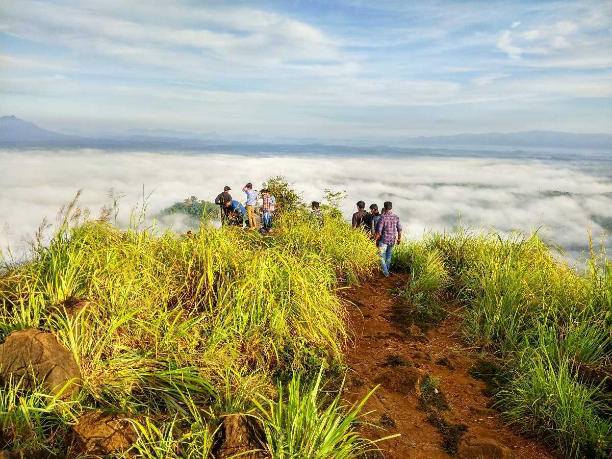

Adorning the northern hills of Kerala is the beautiful district of Wayanad, maintained by the District Tourism Promotion Council, Wayanad. This area is famous for its large amount of camping and trekking trails, breathtaking waterfalls, caves, bird-watching sites, flora, fauna and an overall plethora of magnificent sights. This area has been a tourist favourite over the years. People are especially delighted by the range of exotic products including spices, coffee, tea, bamboo products, honey and herbal plants available here. Kanthanpara Waterfalls is one hotspot in Wayanad that allures tourists from all over the world. Apart from these magnificent falls, Wayanad calls you to experience the stunning beauty of Karapuzha Dam, Pookode & Karlad Lake as well. If you are an adventure seeker, then Cheengari Rock Adventure Center is a must-visit place for you. Another must-visit place in Wayanad is the Edakkal Caves. The caves are two natural rock formations believed to have been formed by a large split in a huge rock. The carvings inside are extremely beautiful.
Wayanad is the Green Paradise on earth tucked in a corner of gods own country. Wayanad is a great weekend getaway for people from south Karnataka. It has good air connectivity with Calicut being the nearest airport at 72kms. One of the biggest attraction in Wayanad is that every place of attraction has a trek with it. Nothing is on the roadside, everything is so secluded from the outside world. Wayanad is a district which has many wonders inside a radius of 50 kms, and the challenge is to choose the best places among them.

Banasura Sagar Dam
Kurumbalakotta,Kalpetta